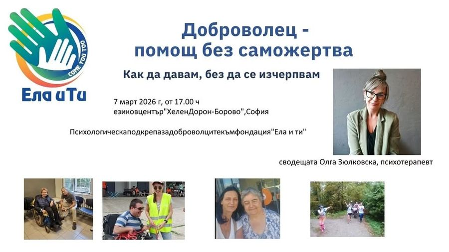

Доброволец – помощ без саможертва
Доброволец – помощ без саможертва
Как да давам, без да се изчерпвам
На 7 март 2026 г. от 17:00 ч. ви каним на среща за психологическа подкрепа на доброволци към Фондация Ела и ти.
Събитието е част от програмата ни „Заедно в града“ – инициатива за психологическа и социална подкрепа на доброволци, близки на хора с увреждания и хора с увреждания. Тази среща е посветена на доброволците.
Доброволчеството носи смисъл. Но носи и натоварване. Понякога даваме повече, отколкото можем да понесем. Понякога забравяме себе си.
Ще говорим за границите.
За риска от прегаряне.
За това как да помагаме устойчиво.
И как да останем свързани със собствените си нужди.
Срещата ще бъде водена от Олга Зюлковска – психотерапевт и доброволец към фондация "Ела и ти" с опит в подкрепата на хора в уязвими ситуации. Тя ще създаде пространство за споделяне, разбиране и професионална подкрепа в малка група.
Място: езиков център Хелен Дорон Борово | Helen Doron Borovo
Група до 10 участници
Участието е на дарителски принцип. С вашата подкрепа ще можем да продължим да организираме регулярни срещи и да развиваме програмата „Заедно в града“.
Очакваме ви. Защото грижата за другите започва с грижа за себе си.
